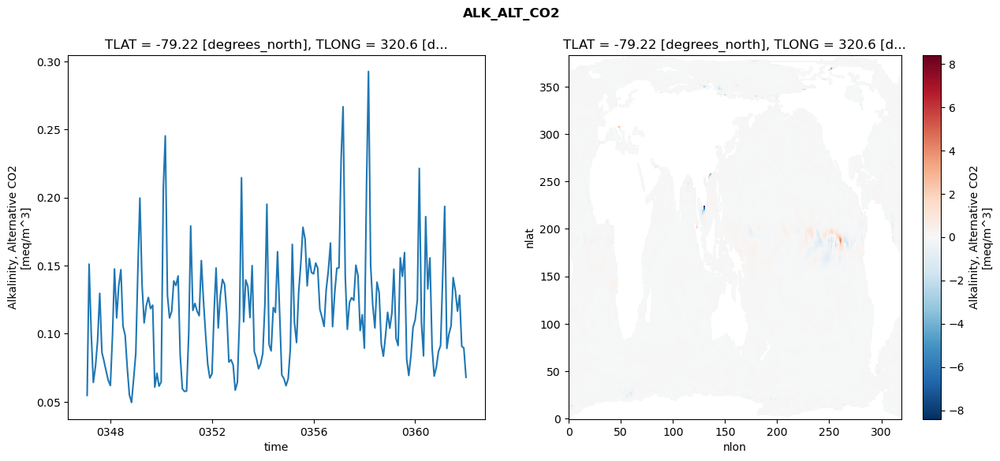
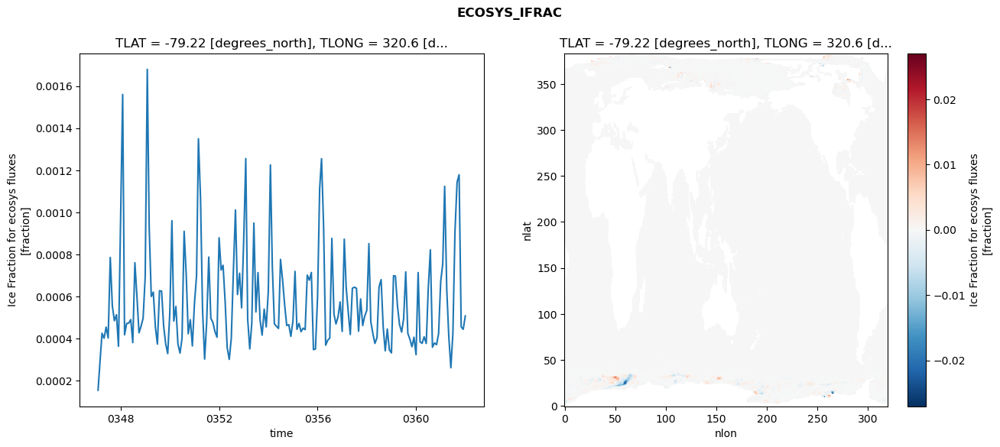
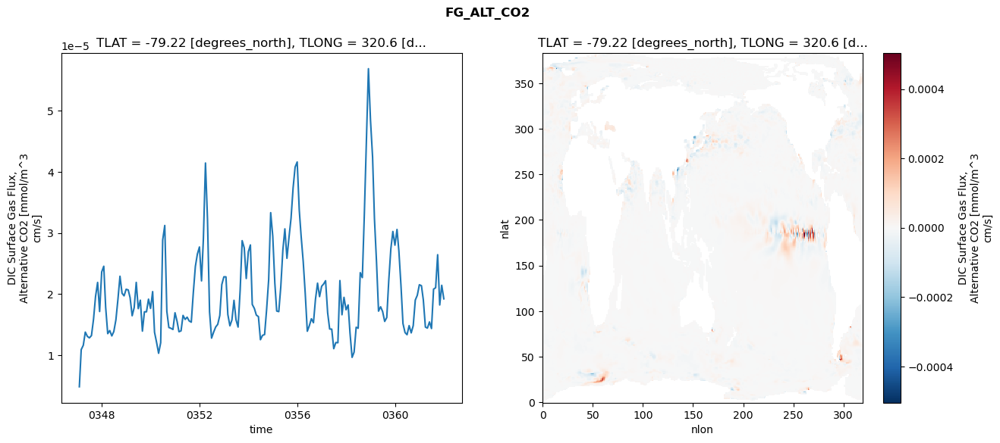
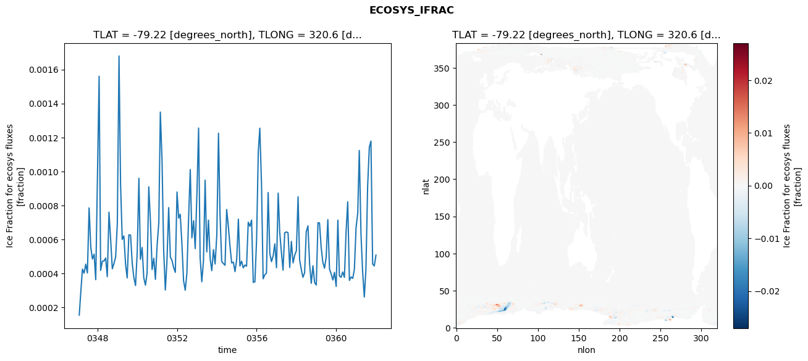
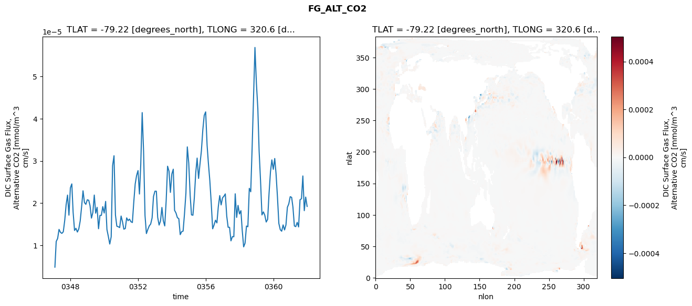
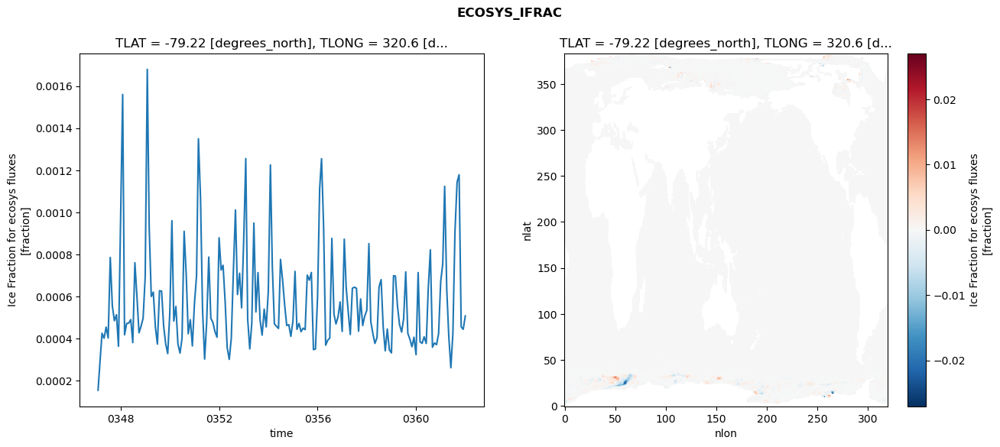
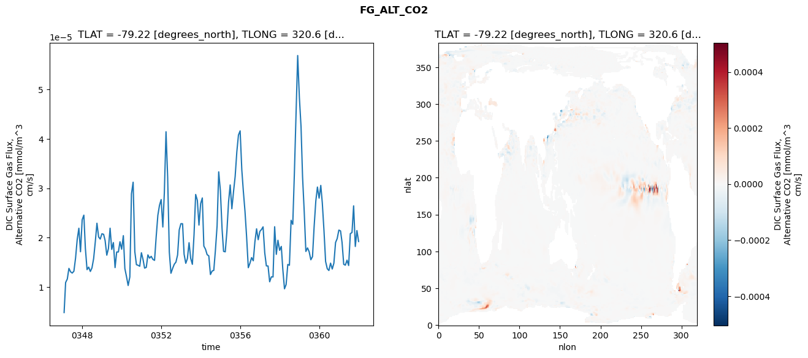

glb-dor_North_Atlantic_basin_041_1999-01-01_00164#
Simulation details#
Case: smyle.cdr-atlas-v0.glb-dor_North_Atlantic_basin_041_1999-01-01_00164.001
Basin: North_Atlantic_basin
Polygon: 41.0
Start date: 1999-01
Show code cell source Hide code cell source
import xarray as xr
import matplotlib.pyplot as plt
Show code cell source Hide code cell source
zarr_store = "/path/to/zarr/store"
# Parameters
zarr_store = "/global/cfs/projectdirs/m4746/Projects/Ocean-CDR-Atlas-v0/data/validation/smyle.cdr-atlas-v0.glb-dor_North_Atlantic_basin_041_1999-01-01_00164.001.validation.zarr"
Show code cell source Hide code cell source
%%time
ds_o = xr.open_zarr(zarr_store).compute()
ds_o
CPU times: user 639 ms, sys: 430 ms, total: 1.07 s
Wall time: 1.43 s
<xarray.Dataset> Size: 2MB
Dimensions: (nlat: 384, nlon: 320, time: 180)
Coordinates:
TLAT float64 8B -79.22
TLONG float64 8B 320.6
ULAT float64 8B -78.95
ULONG float64 8B 321.1
* time (time) object 1kB 0347-02-01 00:00:00 ... 0362-01-01 0...
z_t float32 4B 500.0
Dimensions without coordinates: nlat, nlon
Data variables:
ALK_ALT_CO2_diff (nlat, nlon) float32 492kB nan nan nan ... nan nan nan
ALK_ALT_CO2_rmse (time) float64 1kB 0.05465 0.1511 ... 0.08953 0.06796
DIC_ALT_CO2_diff (nlat, nlon) float32 492kB nan nan nan ... nan nan nan
DIC_ALT_CO2_rmse (time) float64 1kB 0.05612 0.1481 ... 0.1491 0.1328
ECOSYS_IFRAC_diff (nlat, nlon) float32 492kB nan nan nan ... nan nan nan
ECOSYS_IFRAC_rmse (time) float64 1kB 0.0001557 0.0002875 ... 0.0005085
FG_ALT_CO2_diff (nlat, nlon) float32 492kB nan nan nan ... nan nan nan
FG_ALT_CO2_rmse (time) float64 1kB 4.82e-06 1.09e-05 ... 1.921e-05xarray.Dataset
- nlat: 384
- nlon: 320
- time: 180
- TLAT()float64-79.22
- long_name :
- array of t-grid latitudes
- units :
- degrees_north
array(-79.22052261)
- TLONG()float64320.6
- long_name :
- array of t-grid longitudes
- units :
- degrees_east
array(320.56250892)
- ULAT()float64-78.95
- long_name :
- array of u-grid latitudes
- units :
- degrees_north
array(-78.95289509)
- ULONG()float64321.1
- long_name :
- array of u-grid longitudes
- units :
- degrees_east
array(321.12500894)
- time(time)object0347-02-01 00:00:00 ... 0362-01-...
- bounds :
- time_bound
- long_name :
- time
array([cftime.DatetimeNoLeap(347, 2, 1, 0, 0, 0, 0, has_year_zero=True), cftime.DatetimeNoLeap(347, 3, 1, 0, 0, 0, 0, has_year_zero=True), cftime.DatetimeNoLeap(347, 4, 1, 0, 0, 0, 0, has_year_zero=True), cftime.DatetimeNoLeap(347, 5, 1, 0, 0, 0, 0, has_year_zero=True), cftime.DatetimeNoLeap(347, 6, 1, 0, 0, 0, 0, has_year_zero=True), cftime.DatetimeNoLeap(347, 7, 1, 0, 0, 0, 0, has_year_zero=True), cftime.DatetimeNoLeap(347, 8, 1, 0, 0, 0, 0, has_year_zero=True), cftime.DatetimeNoLeap(347, 9, 1, 0, 0, 0, 0, has_year_zero=True), cftime.DatetimeNoLeap(347, 10, 1, 0, 0, 0, 0, has_year_zero=True), cftime.DatetimeNoLeap(347, 11, 1, 0, 0, 0, 0, has_year_zero=True), cftime.DatetimeNoLeap(347, 12, 1, 0, 0, 0, 0, has_year_zero=True), cftime.DatetimeNoLeap(348, 1, 1, 0, 0, 0, 0, has_year_zero=True), cftime.DatetimeNoLeap(348, 2, 1, 0, 0, 0, 0, has_year_zero=True), cftime.DatetimeNoLeap(348, 3, 1, 0, 0, 0, 0, has_year_zero=True), cftime.DatetimeNoLeap(348, 4, 1, 0, 0, 0, 0, has_year_zero=True), cftime.DatetimeNoLeap(348, 5, 1, 0, 0, 0, 0, has_year_zero=True), cftime.DatetimeNoLeap(348, 6, 1, 0, 0, 0, 0, has_year_zero=True), cftime.DatetimeNoLeap(348, 7, 1, 0, 0, 0, 0, has_year_zero=True), cftime.DatetimeNoLeap(348, 8, 1, 0, 0, 0, 0, has_year_zero=True), cftime.DatetimeNoLeap(348, 9, 1, 0, 0, 0, 0, has_year_zero=True), cftime.DatetimeNoLeap(348, 10, 1, 0, 0, 0, 0, has_year_zero=True), cftime.DatetimeNoLeap(348, 11, 1, 0, 0, 0, 0, has_year_zero=True), cftime.DatetimeNoLeap(348, 12, 1, 0, 0, 0, 0, has_year_zero=True), cftime.DatetimeNoLeap(349, 1, 1, 0, 0, 0, 0, has_year_zero=True), cftime.DatetimeNoLeap(349, 2, 1, 0, 0, 0, 0, has_year_zero=True), cftime.DatetimeNoLeap(349, 3, 1, 0, 0, 0, 0, has_year_zero=True), cftime.DatetimeNoLeap(349, 4, 1, 0, 0, 0, 0, has_year_zero=True), cftime.DatetimeNoLeap(349, 5, 1, 0, 0, 0, 0, has_year_zero=True), cftime.DatetimeNoLeap(349, 6, 1, 0, 0, 0, 0, has_year_zero=True), cftime.DatetimeNoLeap(349, 7, 1, 0, 0, 0, 0, has_year_zero=True), cftime.DatetimeNoLeap(349, 8, 1, 0, 0, 0, 0, has_year_zero=True), cftime.DatetimeNoLeap(349, 9, 1, 0, 0, 0, 0, has_year_zero=True), cftime.DatetimeNoLeap(349, 10, 1, 0, 0, 0, 0, has_year_zero=True), cftime.DatetimeNoLeap(349, 11, 1, 0, 0, 0, 0, has_year_zero=True), cftime.DatetimeNoLeap(349, 12, 1, 0, 0, 0, 0, has_year_zero=True), cftime.DatetimeNoLeap(350, 1, 1, 0, 0, 0, 0, has_year_zero=True), cftime.DatetimeNoLeap(350, 2, 1, 0, 0, 0, 0, has_year_zero=True), cftime.DatetimeNoLeap(350, 3, 1, 0, 0, 0, 0, has_year_zero=True), cftime.DatetimeNoLeap(350, 4, 1, 0, 0, 0, 0, has_year_zero=True), cftime.DatetimeNoLeap(350, 5, 1, 0, 0, 0, 0, has_year_zero=True), cftime.DatetimeNoLeap(350, 6, 1, 0, 0, 0, 0, has_year_zero=True), cftime.DatetimeNoLeap(350, 7, 1, 0, 0, 0, 0, has_year_zero=True), cftime.DatetimeNoLeap(350, 8, 1, 0, 0, 0, 0, has_year_zero=True), cftime.DatetimeNoLeap(350, 9, 1, 0, 0, 0, 0, has_year_zero=True), cftime.DatetimeNoLeap(350, 10, 1, 0, 0, 0, 0, has_year_zero=True), cftime.DatetimeNoLeap(350, 11, 1, 0, 0, 0, 0, has_year_zero=True), cftime.DatetimeNoLeap(350, 12, 1, 0, 0, 0, 0, has_year_zero=True), cftime.DatetimeNoLeap(351, 1, 1, 0, 0, 0, 0, has_year_zero=True), cftime.DatetimeNoLeap(351, 2, 1, 0, 0, 0, 0, has_year_zero=True), cftime.DatetimeNoLeap(351, 3, 1, 0, 0, 0, 0, has_year_zero=True), cftime.DatetimeNoLeap(351, 4, 1, 0, 0, 0, 0, has_year_zero=True), cftime.DatetimeNoLeap(351, 5, 1, 0, 0, 0, 0, has_year_zero=True), cftime.DatetimeNoLeap(351, 6, 1, 0, 0, 0, 0, has_year_zero=True), cftime.DatetimeNoLeap(351, 7, 1, 0, 0, 0, 0, has_year_zero=True), cftime.DatetimeNoLeap(351, 8, 1, 0, 0, 0, 0, has_year_zero=True), cftime.DatetimeNoLeap(351, 9, 1, 0, 0, 0, 0, has_year_zero=True), cftime.DatetimeNoLeap(351, 10, 1, 0, 0, 0, 0, has_year_zero=True), cftime.DatetimeNoLeap(351, 11, 1, 0, 0, 0, 0, has_year_zero=True), cftime.DatetimeNoLeap(351, 12, 1, 0, 0, 0, 0, has_year_zero=True), cftime.DatetimeNoLeap(352, 1, 1, 0, 0, 0, 0, has_year_zero=True), cftime.DatetimeNoLeap(352, 2, 1, 0, 0, 0, 0, has_year_zero=True), cftime.DatetimeNoLeap(352, 3, 1, 0, 0, 0, 0, has_year_zero=True), cftime.DatetimeNoLeap(352, 4, 1, 0, 0, 0, 0, has_year_zero=True), cftime.DatetimeNoLeap(352, 5, 1, 0, 0, 0, 0, has_year_zero=True), cftime.DatetimeNoLeap(352, 6, 1, 0, 0, 0, 0, has_year_zero=True), cftime.DatetimeNoLeap(352, 7, 1, 0, 0, 0, 0, has_year_zero=True), cftime.DatetimeNoLeap(352, 8, 1, 0, 0, 0, 0, has_year_zero=True), cftime.DatetimeNoLeap(352, 9, 1, 0, 0, 0, 0, has_year_zero=True), cftime.DatetimeNoLeap(352, 10, 1, 0, 0, 0, 0, has_year_zero=True), cftime.DatetimeNoLeap(352, 11, 1, 0, 0, 0, 0, has_year_zero=True), cftime.DatetimeNoLeap(352, 12, 1, 0, 0, 0, 0, has_year_zero=True), cftime.DatetimeNoLeap(353, 1, 1, 0, 0, 0, 0, has_year_zero=True), cftime.DatetimeNoLeap(353, 2, 1, 0, 0, 0, 0, has_year_zero=True), cftime.DatetimeNoLeap(353, 3, 1, 0, 0, 0, 0, has_year_zero=True), cftime.DatetimeNoLeap(353, 4, 1, 0, 0, 0, 0, has_year_zero=True), cftime.DatetimeNoLeap(353, 5, 1, 0, 0, 0, 0, has_year_zero=True), cftime.DatetimeNoLeap(353, 6, 1, 0, 0, 0, 0, has_year_zero=True), cftime.DatetimeNoLeap(353, 7, 1, 0, 0, 0, 0, has_year_zero=True), cftime.DatetimeNoLeap(353, 8, 1, 0, 0, 0, 0, has_year_zero=True), cftime.DatetimeNoLeap(353, 9, 1, 0, 0, 0, 0, has_year_zero=True), cftime.DatetimeNoLeap(353, 10, 1, 0, 0, 0, 0, has_year_zero=True), cftime.DatetimeNoLeap(353, 11, 1, 0, 0, 0, 0, has_year_zero=True), cftime.DatetimeNoLeap(353, 12, 1, 0, 0, 0, 0, has_year_zero=True), cftime.DatetimeNoLeap(354, 1, 1, 0, 0, 0, 0, has_year_zero=True), cftime.DatetimeNoLeap(354, 2, 1, 0, 0, 0, 0, has_year_zero=True), cftime.DatetimeNoLeap(354, 3, 1, 0, 0, 0, 0, has_year_zero=True), cftime.DatetimeNoLeap(354, 4, 1, 0, 0, 0, 0, has_year_zero=True), cftime.DatetimeNoLeap(354, 5, 1, 0, 0, 0, 0, has_year_zero=True), cftime.DatetimeNoLeap(354, 6, 1, 0, 0, 0, 0, has_year_zero=True), cftime.DatetimeNoLeap(354, 7, 1, 0, 0, 0, 0, has_year_zero=True), cftime.DatetimeNoLeap(354, 8, 1, 0, 0, 0, 0, has_year_zero=True), cftime.DatetimeNoLeap(354, 9, 1, 0, 0, 0, 0, has_year_zero=True), cftime.DatetimeNoLeap(354, 10, 1, 0, 0, 0, 0, has_year_zero=True), cftime.DatetimeNoLeap(354, 11, 1, 0, 0, 0, 0, has_year_zero=True), cftime.DatetimeNoLeap(354, 12, 1, 0, 0, 0, 0, has_year_zero=True), cftime.DatetimeNoLeap(355, 1, 1, 0, 0, 0, 0, has_year_zero=True), cftime.DatetimeNoLeap(355, 2, 1, 0, 0, 0, 0, has_year_zero=True), cftime.DatetimeNoLeap(355, 3, 1, 0, 0, 0, 0, has_year_zero=True), cftime.DatetimeNoLeap(355, 4, 1, 0, 0, 0, 0, has_year_zero=True), cftime.DatetimeNoLeap(355, 5, 1, 0, 0, 0, 0, has_year_zero=True), cftime.DatetimeNoLeap(355, 6, 1, 0, 0, 0, 0, has_year_zero=True), cftime.DatetimeNoLeap(355, 7, 1, 0, 0, 0, 0, has_year_zero=True), cftime.DatetimeNoLeap(355, 8, 1, 0, 0, 0, 0, has_year_zero=True), cftime.DatetimeNoLeap(355, 9, 1, 0, 0, 0, 0, has_year_zero=True), cftime.DatetimeNoLeap(355, 10, 1, 0, 0, 0, 0, has_year_zero=True), cftime.DatetimeNoLeap(355, 11, 1, 0, 0, 0, 0, has_year_zero=True), cftime.DatetimeNoLeap(355, 12, 1, 0, 0, 0, 0, has_year_zero=True), cftime.DatetimeNoLeap(356, 1, 1, 0, 0, 0, 0, has_year_zero=True), cftime.DatetimeNoLeap(356, 2, 1, 0, 0, 0, 0, has_year_zero=True), cftime.DatetimeNoLeap(356, 3, 1, 0, 0, 0, 0, has_year_zero=True), cftime.DatetimeNoLeap(356, 4, 1, 0, 0, 0, 0, has_year_zero=True), cftime.DatetimeNoLeap(356, 5, 1, 0, 0, 0, 0, has_year_zero=True), cftime.DatetimeNoLeap(356, 6, 1, 0, 0, 0, 0, has_year_zero=True), cftime.DatetimeNoLeap(356, 7, 1, 0, 0, 0, 0, has_year_zero=True), cftime.DatetimeNoLeap(356, 8, 1, 0, 0, 0, 0, has_year_zero=True), cftime.DatetimeNoLeap(356, 9, 1, 0, 0, 0, 0, has_year_zero=True), cftime.DatetimeNoLeap(356, 10, 1, 0, 0, 0, 0, has_year_zero=True), cftime.DatetimeNoLeap(356, 11, 1, 0, 0, 0, 0, has_year_zero=True), cftime.DatetimeNoLeap(356, 12, 1, 0, 0, 0, 0, has_year_zero=True), cftime.DatetimeNoLeap(357, 1, 1, 0, 0, 0, 0, has_year_zero=True), cftime.DatetimeNoLeap(357, 2, 1, 0, 0, 0, 0, has_year_zero=True), cftime.DatetimeNoLeap(357, 3, 1, 0, 0, 0, 0, has_year_zero=True), cftime.DatetimeNoLeap(357, 4, 1, 0, 0, 0, 0, has_year_zero=True), cftime.DatetimeNoLeap(357, 5, 1, 0, 0, 0, 0, has_year_zero=True), cftime.DatetimeNoLeap(357, 6, 1, 0, 0, 0, 0, has_year_zero=True), cftime.DatetimeNoLeap(357, 7, 1, 0, 0, 0, 0, has_year_zero=True), cftime.DatetimeNoLeap(357, 8, 1, 0, 0, 0, 0, has_year_zero=True), cftime.DatetimeNoLeap(357, 9, 1, 0, 0, 0, 0, has_year_zero=True), cftime.DatetimeNoLeap(357, 10, 1, 0, 0, 0, 0, has_year_zero=True), cftime.DatetimeNoLeap(357, 11, 1, 0, 0, 0, 0, has_year_zero=True), cftime.DatetimeNoLeap(357, 12, 1, 0, 0, 0, 0, has_year_zero=True), cftime.DatetimeNoLeap(358, 1, 1, 0, 0, 0, 0, has_year_zero=True), cftime.DatetimeNoLeap(358, 2, 1, 0, 0, 0, 0, has_year_zero=True), cftime.DatetimeNoLeap(358, 3, 1, 0, 0, 0, 0, has_year_zero=True), cftime.DatetimeNoLeap(358, 4, 1, 0, 0, 0, 0, has_year_zero=True), cftime.DatetimeNoLeap(358, 5, 1, 0, 0, 0, 0, has_year_zero=True), cftime.DatetimeNoLeap(358, 6, 1, 0, 0, 0, 0, has_year_zero=True), cftime.DatetimeNoLeap(358, 7, 1, 0, 0, 0, 0, has_year_zero=True), cftime.DatetimeNoLeap(358, 8, 1, 0, 0, 0, 0, has_year_zero=True), cftime.DatetimeNoLeap(358, 9, 1, 0, 0, 0, 0, has_year_zero=True), cftime.DatetimeNoLeap(358, 10, 1, 0, 0, 0, 0, has_year_zero=True), cftime.DatetimeNoLeap(358, 11, 1, 0, 0, 0, 0, has_year_zero=True), cftime.DatetimeNoLeap(358, 12, 1, 0, 0, 0, 0, has_year_zero=True), cftime.DatetimeNoLeap(359, 1, 1, 0, 0, 0, 0, has_year_zero=True), cftime.DatetimeNoLeap(359, 2, 1, 0, 0, 0, 0, has_year_zero=True), cftime.DatetimeNoLeap(359, 3, 1, 0, 0, 0, 0, has_year_zero=True), cftime.DatetimeNoLeap(359, 4, 1, 0, 0, 0, 0, has_year_zero=True), cftime.DatetimeNoLeap(359, 5, 1, 0, 0, 0, 0, has_year_zero=True), cftime.DatetimeNoLeap(359, 6, 1, 0, 0, 0, 0, has_year_zero=True), cftime.DatetimeNoLeap(359, 7, 1, 0, 0, 0, 0, has_year_zero=True), cftime.DatetimeNoLeap(359, 8, 1, 0, 0, 0, 0, has_year_zero=True), cftime.DatetimeNoLeap(359, 9, 1, 0, 0, 0, 0, has_year_zero=True), cftime.DatetimeNoLeap(359, 10, 1, 0, 0, 0, 0, has_year_zero=True), cftime.DatetimeNoLeap(359, 11, 1, 0, 0, 0, 0, has_year_zero=True), cftime.DatetimeNoLeap(359, 12, 1, 0, 0, 0, 0, has_year_zero=True), cftime.DatetimeNoLeap(360, 1, 1, 0, 0, 0, 0, has_year_zero=True), cftime.DatetimeNoLeap(360, 2, 1, 0, 0, 0, 0, has_year_zero=True), cftime.DatetimeNoLeap(360, 3, 1, 0, 0, 0, 0, has_year_zero=True), cftime.DatetimeNoLeap(360, 4, 1, 0, 0, 0, 0, has_year_zero=True), cftime.DatetimeNoLeap(360, 5, 1, 0, 0, 0, 0, has_year_zero=True), cftime.DatetimeNoLeap(360, 6, 1, 0, 0, 0, 0, has_year_zero=True), cftime.DatetimeNoLeap(360, 7, 1, 0, 0, 0, 0, has_year_zero=True), cftime.DatetimeNoLeap(360, 8, 1, 0, 0, 0, 0, has_year_zero=True), cftime.DatetimeNoLeap(360, 9, 1, 0, 0, 0, 0, has_year_zero=True), cftime.DatetimeNoLeap(360, 10, 1, 0, 0, 0, 0, has_year_zero=True), cftime.DatetimeNoLeap(360, 11, 1, 0, 0, 0, 0, has_year_zero=True), cftime.DatetimeNoLeap(360, 12, 1, 0, 0, 0, 0, has_year_zero=True), cftime.DatetimeNoLeap(361, 1, 1, 0, 0, 0, 0, has_year_zero=True), cftime.DatetimeNoLeap(361, 2, 1, 0, 0, 0, 0, has_year_zero=True), cftime.DatetimeNoLeap(361, 3, 1, 0, 0, 0, 0, has_year_zero=True), cftime.DatetimeNoLeap(361, 4, 1, 0, 0, 0, 0, has_year_zero=True), cftime.DatetimeNoLeap(361, 5, 1, 0, 0, 0, 0, has_year_zero=True), cftime.DatetimeNoLeap(361, 6, 1, 0, 0, 0, 0, has_year_zero=True), cftime.DatetimeNoLeap(361, 7, 1, 0, 0, 0, 0, has_year_zero=True), cftime.DatetimeNoLeap(361, 8, 1, 0, 0, 0, 0, has_year_zero=True), cftime.DatetimeNoLeap(361, 9, 1, 0, 0, 0, 0, has_year_zero=True), cftime.DatetimeNoLeap(361, 10, 1, 0, 0, 0, 0, has_year_zero=True), cftime.DatetimeNoLeap(361, 11, 1, 0, 0, 0, 0, has_year_zero=True), cftime.DatetimeNoLeap(361, 12, 1, 0, 0, 0, 0, has_year_zero=True), cftime.DatetimeNoLeap(362, 1, 1, 0, 0, 0, 0, has_year_zero=True)], dtype=object) - z_t()float32500.0
- long_name :
- depth from surface to midpoint of layer
- positive :
- down
- units :
- centimeters
- valid_max :
- 537500.0
- valid_min :
- 500.0
array(500., dtype=float32)
- ALK_ALT_CO2_diff(nlat, nlon)float32nan nan nan nan ... nan nan nan nan
- cell_methods :
- time: mean
- grid_loc :
- 3111
- long_name :
- Alkalinity, Alternative CO2
- units :
- meq/m^3
array([[ nan, nan, nan, ..., nan, nan, nan], [ nan, nan, nan, ..., nan, nan, nan], [-0.01708984, -0.03613281, -0.01855469, ..., nan, nan, nan], ..., [ nan, nan, nan, ..., nan, nan, nan], [ nan, nan, nan, ..., nan, nan, nan], [ nan, nan, nan, ..., nan, nan, nan]], dtype=float32) - ALK_ALT_CO2_rmse(time)float640.05465 0.1511 ... 0.08953 0.06796
- cell_methods :
- time: mean
- grid_loc :
- 3111
- long_name :
- Alkalinity, Alternative CO2
- units :
- meq/m^3
array([0.05465333, 0.15107099, 0.0996722 , 0.06419697, 0.07597037, 0.09491677, 0.12964475, 0.08626854, 0.07988071, 0.07247759, 0.06573961, 0.06188449, 0.09968422, 0.14750182, 0.11160914, 0.135092 , 0.14698009, 0.10551664, 0.0988514 , 0.07457423, 0.05505819, 0.04945271, 0.06662331, 0.08550734, 0.14904842, 0.19961973, 0.13629357, 0.10793225, 0.12063216, 0.12661669, 0.11843231, 0.12090872, 0.0606945 , 0.07089108, 0.06145506, 0.06448704, 0.20761254, 0.24528429, 0.1281818 , 0.11151015, 0.11644181, 0.1387939 , 0.13533233, 0.14236561, 0.08436847, 0.05960579, 0.05757855, 0.05785463, 0.10002297, 0.17907354, 0.11707307, 0.12221603, 0.11655526, 0.1131636 , 0.15372019, 0.12392876, 0.09976846, 0.07745158, 0.06744613, 0.07048842, 0.11697484, 0.14821712, 0.10419876, 0.12796537, 0.13985371, 0.13619568, 0.11531708, 0.07909656, 0.08089513, 0.07702171, 0.05848392, 0.06423101, 0.11200501, 0.21454204, 0.10870828, 0.13947708, 0.13464082, 0.111856 , 0.14996161, 0.08688502, 0.08201757, 0.07426392, 0.07783824, 0.08541605, 0.12238891, 0.19507289, 0.09217458, 0.08735672, 0.11918652, 0.11561323, 0.16019915, 0.11342097, 0.06965428, 0.06692592, 0.06176566, 0.06690629, 0.08923381, 0.16557353, 0.10821555, 0.09345307, 0.13078809, 0.15125544, 0.17812484, 0.16944344, 0.13514737, 0.1552325 , 0.14498851, 0.14393907, 0.15184278, 0.14810779, 0.11792946, 0.11221729, 0.10532714, 0.13209559, 0.14639198, 0.16654686, 0.10512924, 0.13012555, 0.14802879, 0.14837236, 0.22900317, 0.26669041, 0.14225438, 0.10319126, 0.12289887, 0.12638432, 0.1245199 , 0.1502557 , 0.14272684, 0.10227874, 0.11387305, 0.08934934, 0.20923389, 0.29258421, 0.1503492 , 0.12105206, 0.10419017, 0.13781124, 0.13028587, 0.0922922 , 0.0834795 , 0.09861395, 0.11566999, 0.10399014, 0.11549691, 0.14739629, 0.09649833, 0.09124772, 0.15573492, 0.1421081 , 0.15957281, 0.08112171, 0.06929461, 0.08383951, 0.1046569 , 0.11020791, 0.1246845 , 0.22140852, 0.10789182, 0.08365518, 0.18599087, 0.1328545 , 0.15566793, 0.08950625, 0.06882246, 0.07539418, 0.08666703, 0.09129095, 0.14286747, 0.19348292, 0.08916307, 0.09971011, 0.10576932, 0.14115885, 0.13155132, 0.11651771, 0.1281764 , 0.09067163, 0.08953056, 0.06795782]) - DIC_ALT_CO2_diff(nlat, nlon)float32nan nan nan nan ... nan nan nan nan
- cell_methods :
- time: mean
- grid_loc :
- 3111
- long_name :
- Dissolved Inorganic Carbon, Alternative CO2
- units :
- mmol/m^3
array([[ nan, nan, nan, ..., nan, nan, nan], [ nan, nan, nan, ..., nan, nan, nan], [-0.03222656, -0.0559082 , -0.03198242, ..., nan, nan, nan], ..., [ nan, nan, nan, ..., nan, nan, nan], [ nan, nan, nan, ..., nan, nan, nan], [ nan, nan, nan, ..., nan, nan, nan]], dtype=float32) - DIC_ALT_CO2_rmse(time)float640.05612 0.1481 ... 0.1491 0.1328
- cell_methods :
- time: mean
- grid_loc :
- 3111
- long_name :
- Dissolved Inorganic Carbon, Alternative CO2
- units :
- mmol/m^3
array([0.05611598, 0.14807404, 0.11210673, 0.08915236, 0.09953173, 0.12919598, 0.15425836, 0.1367696 , 0.13628841, 0.13804263, 0.1285458 , 0.16082585, 0.17672642, 0.18838332, 0.15427098, 0.15497619, 0.16454193, 0.15784151, 0.16013259, 0.1559163 , 0.15522504, 0.13864822, 0.13284353, 0.14507395, 0.17873095, 0.21995191, 0.1696739 , 0.13900005, 0.14463345, 0.15335306, 0.14780537, 0.15679335, 0.12872186, 0.12787778, 0.1171995 , 0.12078088, 0.21827422, 0.24145751, 0.14485554, 0.12765218, 0.13390044, 0.15897137, 0.16557766, 0.16420212, 0.13078812, 0.11556265, 0.10173301, 0.09854919, 0.13232174, 0.18821444, 0.13483856, 0.14088293, 0.14127882, 0.14731982, 0.17698035, 0.1567896 , 0.15409682, 0.13869936, 0.12745502, 0.13144598, 0.15590956, 0.18679084, 0.15746791, 0.1657938 , 0.16419198, 0.16256381, 0.15121169, 0.12410945, 0.1279611 , 0.12031633, 0.11386557, 0.11365375, 0.13769836, 0.21543533, 0.13882658, 0.14701122, 0.14507773, 0.13774171, 0.16270158, 0.14516996, 0.17495438, 0.14609272, 0.16113574, 0.17737822, 0.18683199, 0.2213744 , 0.1397157 , 0.12618032, 0.14348683, 0.14838859, 0.1823253 , 0.15572199, 0.13249784, 0.12518428, 0.11809644, 0.11935482, 0.13845669, 0.20378265, 0.1553936 , 0.14862492, 0.15430718, 0.17492577, 0.20058829, 0.21707875, 0.24815266, 0.29071105, 0.31449695, 0.30962302, 0.28034792, 0.24681272, 0.22318378, 0.17784933, 0.15355388, 0.18233966, 0.18394833, 0.18660513, 0.17653748, 0.19673226, 0.20640506, 0.20853713, 0.25429928, 0.27605167, 0.16773034, 0.13431212, 0.1437935 , 0.15135804, 0.15074927, 0.16705269, 0.15294344, 0.12529696, 0.13203132, 0.11285448, 0.20469526, 0.27308037, 0.15109063, 0.12969152, 0.12313439, 0.17959788, 0.20536168, 0.20450763, 0.26957828, 0.30545681, 0.30607203, 0.25326325, 0.25751836, 0.27313134, 0.20671847, 0.15087689, 0.17728679, 0.16459247, 0.1810079 , 0.13843441, 0.15160983, 0.18097139, 0.21213758, 0.21834317, 0.21709913, 0.26154262, 0.15945265, 0.13048554, 0.19838859, 0.1620463 , 0.17019334, 0.12623882, 0.12085261, 0.13608014, 0.13563648, 0.14729826, 0.17976565, 0.21930292, 0.13086417, 0.1216437 , 0.12363685, 0.15830812, 0.16093855, 0.16187429, 0.17028689, 0.14733428, 0.14905528, 0.13280491]) - ECOSYS_IFRAC_diff(nlat, nlon)float32nan nan nan nan ... nan nan nan nan
- cell_methods :
- time: mean
- grid_loc :
- 2110
- long_name :
- Ice Fraction for ecosys fluxes
- units :
- fraction
array([[ nan, nan, nan, ..., nan, nan, nan], [ nan, nan, nan, ..., nan, nan, nan], [-0.00048226, -0.00018698, 0.00011659, ..., nan, nan, nan], ..., [ nan, nan, nan, ..., nan, nan, nan], [ nan, nan, nan, ..., nan, nan, nan], [ nan, nan, nan, ..., nan, nan, nan]], dtype=float32) - ECOSYS_IFRAC_rmse(time)float640.0001557 0.0002875 ... 0.0005085
- cell_methods :
- time: mean
- grid_loc :
- 2110
- long_name :
- Ice Fraction for ecosys fluxes
- units :
- fraction
array([0.00015566, 0.00028746, 0.00042616, 0.00040239, 0.00045529, 0.0004037 , 0.00078611, 0.00055539, 0.00048582, 0.0005143 , 0.00036423, 0.00096145, 0.00155993, 0.00041897, 0.00047268, 0.00047414, 0.00049113, 0.00038191, 0.00076117, 0.00059786, 0.00042837, 0.00046 , 0.00049756, 0.00069506, 0.00167916, 0.00093126, 0.00060096, 0.00062117, 0.00045583, 0.00037488, 0.00062796, 0.00062609, 0.00046177, 0.00037542, 0.00032979, 0.00052371, 0.00096031, 0.00048406, 0.00055363, 0.00037558, 0.00033189, 0.00040249, 0.00091014, 0.00070303, 0.000424 , 0.00049036, 0.00036604, 0.00056702, 0.00069857, 0.00134951, 0.00106874, 0.00053846, 0.0003036 , 0.00047662, 0.0007878 , 0.000497 , 0.0004776 , 0.00043427, 0.0004074 , 0.00087955, 0.00072628, 0.00074894, 0.00057605, 0.00035903, 0.00030229, 0.00040169, 0.00071866, 0.00101127, 0.00061016, 0.00071126, 0.00054679, 0.0008669 , 0.00125556, 0.00049382, 0.00035205, 0.00047282, 0.0009493 , 0.0005272 , 0.00071418, 0.00048847, 0.00041717, 0.00054078, 0.00045634, 0.00062633, 0.00122521, 0.00074775, 0.00047089, 0.00045946, 0.00044889, 0.00077675, 0.00067735, 0.00055774, 0.00046284, 0.00046701, 0.00041166, 0.0004835 , 0.00071983, 0.00044456, 0.00047297, 0.0004338 , 0.00045039, 0.00044355, 0.00070212, 0.000678 , 0.00071447, 0.00034846, 0.00035158, 0.00060098, 0.00111292, 0.00125467, 0.00092754, 0.00036946, 0.00039345, 0.00040318, 0.00087654, 0.00051759, 0.00047033, 0.00050458, 0.00057487, 0.00043452, 0.00087288, 0.00064346, 0.00052605, 0.0004203 , 0.00063996, 0.00064491, 0.00063974, 0.00043584, 0.00058916, 0.00046308, 0.00050741, 0.00053505, 0.00085165, 0.00048149, 0.00042433, 0.00037806, 0.00040479, 0.00064555, 0.00068077, 0.00045506, 0.00034295, 0.00044622, 0.00034739, 0.00033291, 0.00069929, 0.00069783, 0.00055366, 0.0004675 , 0.00043166, 0.00049565, 0.00071737, 0.00042579, 0.0003987 , 0.00036231, 0.00040723, 0.00032466, 0.00071429, 0.00038565, 0.00037844, 0.00040941, 0.00037799, 0.00063943, 0.00082202, 0.00035984, 0.00037994, 0.00037206, 0.00042428, 0.00066992, 0.00075786, 0.00112366, 0.00063465, 0.00041225, 0.00026248, 0.00042586, 0.0009112 , 0.00114289, 0.00117869, 0.00045682, 0.00044491, 0.00050848]) - FG_ALT_CO2_diff(nlat, nlon)float32nan nan nan nan ... nan nan nan nan
- cell_methods :
- time: mean
- grid_loc :
- 2110
- long_name :
- DIC Surface Gas Flux, Alternative CO2
- units :
- mmol/m^3 cm/s
array([[ nan, nan, nan, ..., nan, nan, nan], [ nan, nan, nan, ..., nan, nan, nan], [ 2.4557335e-07, 1.2951978e-07, -4.1602107e-08, ..., nan, nan, nan], ..., [ nan, nan, nan, ..., nan, nan, nan], [ nan, nan, nan, ..., nan, nan, nan], [ nan, nan, nan, ..., nan, nan, nan]], dtype=float32) - FG_ALT_CO2_rmse(time)float644.82e-06 1.09e-05 ... 1.921e-05
- cell_methods :
- time: mean
- grid_loc :
- 2110
- long_name :
- DIC Surface Gas Flux, Alternative CO2
- units :
- mmol/m^3 cm/s
array([4.82021878e-06, 1.09034359e-05, 1.16083936e-05, 1.37669169e-05, 1.30684617e-05, 1.28192770e-05, 1.31990951e-05, 1.58841889e-05, 1.95972552e-05, 2.18988393e-05, 1.71374506e-05, 2.36211420e-05, 2.45504856e-05, 1.78558974e-05, 1.35136864e-05, 1.40201903e-05, 1.31410366e-05, 1.38598450e-05, 1.57639418e-05, 1.91953253e-05, 2.29099663e-05, 2.01210026e-05, 1.97039887e-05, 2.07786201e-05, 2.06683785e-05, 1.94091778e-05, 1.64413588e-05, 1.77706920e-05, 2.19041016e-05, 1.76108208e-05, 1.89888341e-05, 1.39252905e-05, 1.70864306e-05, 1.70900282e-05, 1.91625628e-05, 1.76421154e-05, 2.03966018e-05, 1.37479864e-05, 1.20671057e-05, 1.02951903e-05, 1.20273449e-05, 2.88513033e-05, 3.12212187e-05, 1.71623874e-05, 1.45210601e-05, 1.43925923e-05, 1.41972522e-05, 1.69345770e-05, 1.55223445e-05, 1.38232228e-05, 1.39688839e-05, 1.65008097e-05, 1.58444242e-05, 1.62055742e-05, 1.55864675e-05, 1.53928533e-05, 2.01664395e-05, 2.45140111e-05, 2.65356095e-05, 2.77046834e-05, 2.21511605e-05, 2.90922300e-05, 4.14444174e-05, 3.22998823e-05, 1.70742064e-05, 1.27776298e-05, 1.37638458e-05, 1.46127527e-05, 1.50298132e-05, 1.64941334e-05, 2.15498660e-05, 2.28167907e-05, 2.28098104e-05, 1.66502195e-05, 1.47933874e-05, 1.57531557e-05, 1.89669100e-05, 1.57942500e-05, 1.45943179e-05, 2.06115490e-05, ... 2.71974255e-05, 3.06657088e-05, 2.58460043e-05, 2.93216775e-05, 3.23864209e-05, 3.73894510e-05, 4.07813680e-05, 4.16196497e-05, 3.37258702e-05, 2.94505069e-05, 2.53075335e-05, 2.01120000e-05, 1.39049820e-05, 1.47977309e-05, 1.59476182e-05, 1.53043280e-05, 1.91413225e-05, 2.17767336e-05, 1.95712318e-05, 2.12626405e-05, 2.16588518e-05, 2.21803567e-05, 1.69191644e-05, 1.42703839e-05, 1.42518274e-05, 1.10524552e-05, 1.20576798e-05, 1.20249166e-05, 2.22018012e-05, 1.66081762e-05, 1.94561238e-05, 1.74200319e-05, 1.82163455e-05, 1.35942794e-05, 9.62942962e-06, 1.04887253e-05, 1.45605036e-05, 1.43981558e-05, 2.34976269e-05, 2.26862950e-05, 3.30900033e-05, 4.53419136e-05, 5.68839651e-05, 4.84352090e-05, 4.24325210e-05, 3.23311492e-05, 2.51997992e-05, 1.71960159e-05, 1.79126638e-05, 1.71343305e-05, 1.55128233e-05, 1.61539522e-05, 2.22484336e-05, 2.74051699e-05, 3.02386137e-05, 2.79965536e-05, 3.05690770e-05, 2.70221950e-05, 2.14200477e-05, 1.51653762e-05, 1.36873712e-05, 1.33399781e-05, 1.48283371e-05, 1.36363923e-05, 1.48164613e-05, 1.90110070e-05, 1.97933749e-05, 2.15225520e-05, 2.13561351e-05, 1.90405666e-05, 1.45903115e-05, 1.44177211e-05, 1.54334273e-05, 1.43480796e-05, 2.08033712e-05, 2.10246464e-05, 2.64329567e-05, 1.82062202e-05, 2.14264152e-05, 1.92134787e-05])
- timePandasIndex
PandasIndex(CFTimeIndex([0347-02-01 00:00:00, 0347-03-01 00:00:00, 0347-04-01 00:00:00, 0347-05-01 00:00:00, 0347-06-01 00:00:00, 0347-07-01 00:00:00, 0347-08-01 00:00:00, 0347-09-01 00:00:00, 0347-10-01 00:00:00, 0347-11-01 00:00:00, ... 0361-04-01 00:00:00, 0361-05-01 00:00:00, 0361-06-01 00:00:00, 0361-07-01 00:00:00, 0361-08-01 00:00:00, 0361-09-01 00:00:00, 0361-10-01 00:00:00, 0361-11-01 00:00:00, 0361-12-01 00:00:00, 0362-01-01 00:00:00], dtype='object', length=180, calendar='noleap', freq='MS'))
Show code cell source Hide code cell source
variables = [v[:-5] for v in ds_o.variables if "_rmse" in v]
Show code cell source Hide code cell source
plt.rcParams.update({'figure.max_open_warning': 0})
for v in variables:
fig, axs = plt.subplots(1, 2, figsize=(15, 6))
ds_o[f"{v}_rmse"].plot(ax=axs[0])
ds_o[f"{v}_diff"].plot(ax=axs[1])
plt.suptitle(v, fontweight="bold")

 




